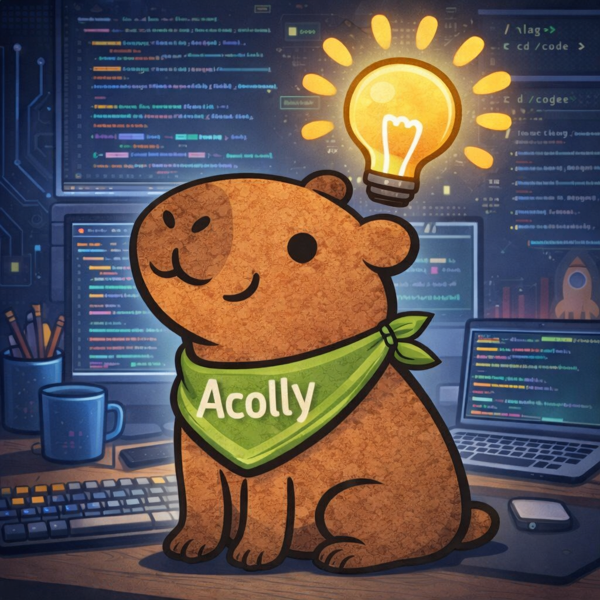

Bem-vindo ao meu blog pessoal
Este espaço foi criado para compartilhar minha trajetória profissional, meus aprendizados na área de tecnologia e minha transição de carreira para o desenvolvimento web.
Atualmente, estou em formação Full Stack JavaScript pela Generation Brasil, além de cursar Tecnologia da Informação na Universidade Anhembi Morumbi.
Aqui, futuramente, você também encontrará conteúdos técnicos, projetos, estudos e publicações relacionadas ao meu desenvolvimento profissional na área de tecnologia.
Tecnologias em estudo
- HTML5
- CSS3
- JavaScript
- React
- Node.js
- NestJS
- SQL
